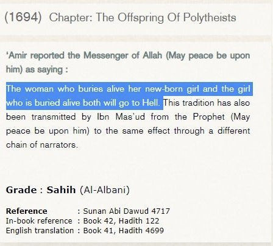
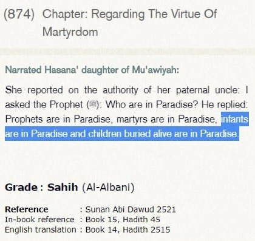
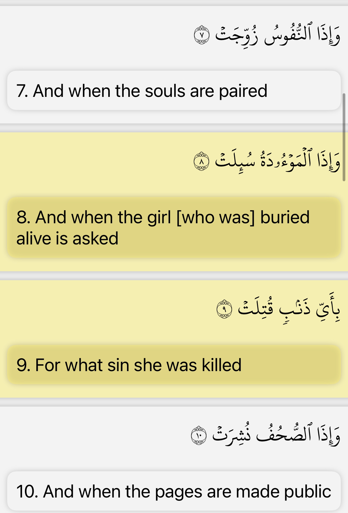

The hadith stated الموؤدة له and many scholars, the word maw’udah in this matn cannot mean the baby girl herself.
Rather, it refers to the one who ordered for the girl to be buried is punished. Where as the word [ الموؤدة له ]
other contexts refers to the unwanted baby girl who was buried alive herself.
وَإِذَا الْمَوْءُودَةُ سُئِلَتْ بِأَيِّ ذَنبٍ قُتِلَتْ
When the baby girl buried alive (maw’udah) is asked for what sin was she killed?
ولعل المراد بالوائدة القابلة وبالموؤدة الموؤدة لها وهي أم الطفل فحذفت الصلة إذ كان من ديدنهم أن المرأة
إذا أخذها الطلق حفر لها حفرة عميقة فجلست عليها والقابلة وراءها تترقب الولد فإن ولدت ذكرا أمسكت وإن
ولدت أنثى ألقتها في تلك الحفرة وأهالت عليها التراب
Al-Baydawi stated:
Perhaps the meaning of ‘الموؤدة له ’ is the mother and the maw’udah is the one for whom she was buried,
which is the child’s mother. Thus, the connecting particle was dropped. It was their custom that when the
woman was sized by labor pains, a deep hole would be dug for her to sit over and the midwife would be behind
her waiting for the child. If she gave birth to a boy, she would keep it. If she gave birth to a girl,
she would throw it in the hole and cover it with dirt.
Al-Munawi states:
والموءودة قيل أراد بها هنا المفعولة لها ذلك وهي أم الطفل
The maw’udah is said to mean here the one for whom that was done, which is the mother of the child.
Al-Albani states:
ليست المقصودة هي الموءودة بذاتها وإنما المقصود الموءود له إما الأب وإما الأم وإما كلاهما معاً إذا كانا
اشتركا واتفقا على وأد البنت تَبَعْهُم فهما الاثنان في النار أما الموءودة هي بالذات فلا حكم لها لا بالجنة ولا
بالنار
It does not mean the buried girl herself, but rather it only means the one for whom she was buried,
whether it was the father, mother, or both together. If they shared in it and agreed upon burying their daughter,
one will follow the second into Hellfire. As for the buried girl herself, there is no judgment upon her,
neither Paradise or Hellfire.
Sources:
1: surah at Takwir ayah 8-9
2: Tuhfat al-Abrar volume 1 page 110
3: Fayd al-Qadir volume 6 page 370
4: al Albani fi al Aqidah volume 5 page 918
https://al-maktaba.org/book/33842/2604
https://www.icraa.org/does-hadith-condemn-the-infants-buried-alive/#_ftn8
https://www.abuaminaelias.com/baby-girl-buried-alive-in-hell/
The prophet also states what really happens to baby’s who buried such ways:

And Allah speaks out this as well:
